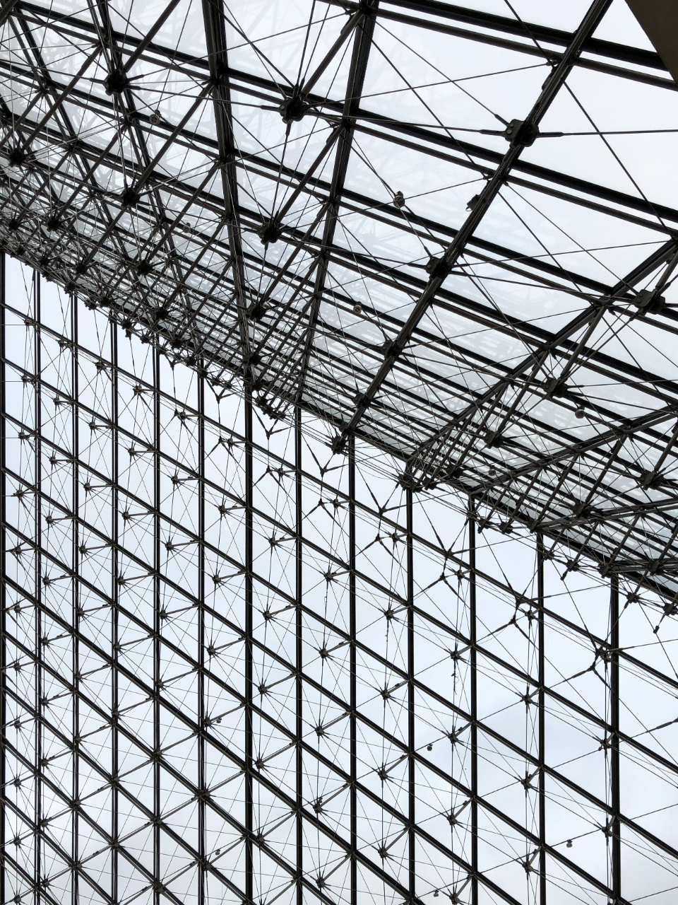

Lattice
Idea. Large glass buildings lose energy in ways that are hard to see. What if a facade could report its own condition?
Approach. A sensor mesh mapped to a live structural model, with anomaly detection that flags panels before they fail.